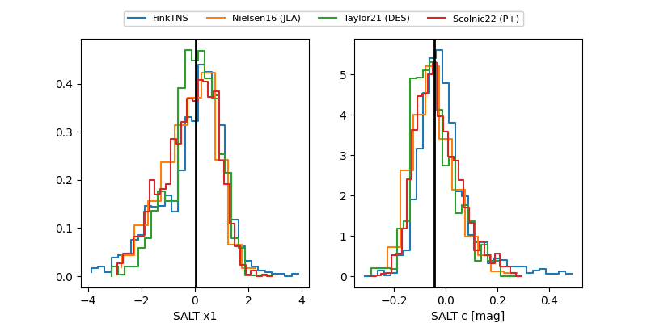

FINK: ZTF25abpeslh
Lasair: ZTF25abpeslh
ALeRCE: ZTF25abpeslh
TNS: 2025xah
YSE: 2025xah
ZTF25abpeslh (ztf,fink)
2025xah (tns,yse)
equatorial (ra, dec) = (127.4287,+35.59371)
galactic (l, b) = (186.7361,+34.49328)

last ztfr=19.55
7 ztfr detections